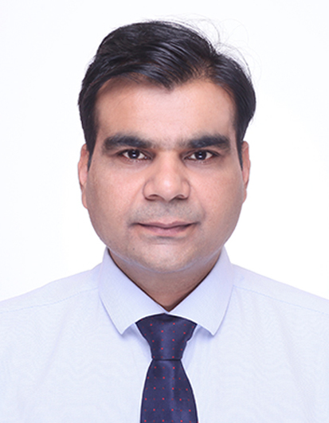

|  |
Zahid AnwarIBDP/A-Level/IGCSE Mathematics TeacherDownload PDF version of the ResumeAddress: Apartment 302, Block 16, Chang Jiang International Garden, Wuxi, Jiangsu 215400, China Phone number: 0086-18552137086 Email address: zahid.anwar@dipont-edu.com; myyearbook2014@yahoo.com Web: https://www.linkedin.com/in/mathsteacher |
A PGCE qualified, IBDP & Cambridge A-Level math specialist with 15+ years of experience teaching mathematics to EFL students within the Senior School (Year 10-13), with highly reputed institutions. Holding extensive knowledge in classroom management, differentiated instruction, AfL and various teaching methods in order to reach learners of all backgrounds. Employer-recognized specialist in maximizing students' interest, performance and overall grades.
Taught 20 to 24 pure mathematics, applied mathematics and statistics lessons per week to 4 different classes, sized from 15 to 21 students from all ability levels in each class, ages ranging from 16 to 19 years across IBDP, IGCSE, AS and A2 levels.
Taught 24 to 30 pure mathematics lessons per week to 7 different classes, sized from 30 to 32 students from all ability levels in each class, ages ranging from 14 to 18 years across IGCSE, AS and A2 levels.
Taught grades 6, 7, 9, and 10 and Pearson Edexcel mathematics to 12- to 17-year-old EAL foreign students (from Korea, Japan, Singapore, Pakistan, Malaysia and India) at WIS.
The National Institute of Modern Language and Sciences (NIMLS) is accredited by the federal government. My duties involved all that is required of a senior manager and lead teacher.
Over four years of part-time experience in teaching oral English and conducting professional development for ESL professionals & students from ages 18–40. Being a motivational speaker, I helped my students to focus on mental, social, physical, financial and career aspects of their lives.
| Action oriented | Creative thinking | Clearly conveying features |
| Ability to prioritize | Ambitious | Attitude |
| Caring | Adapting |